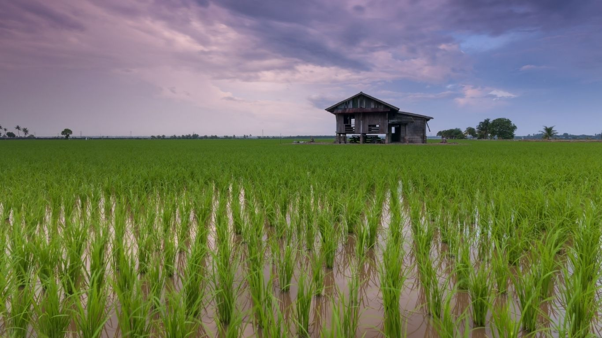
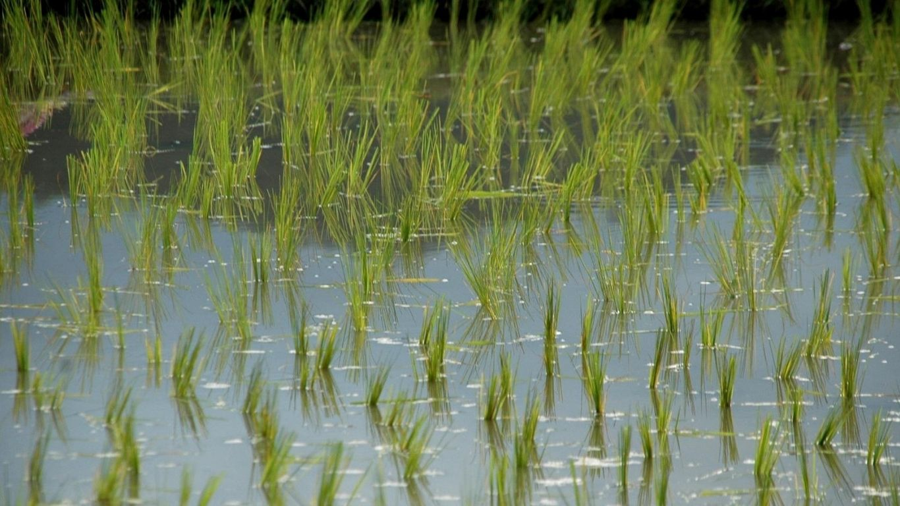
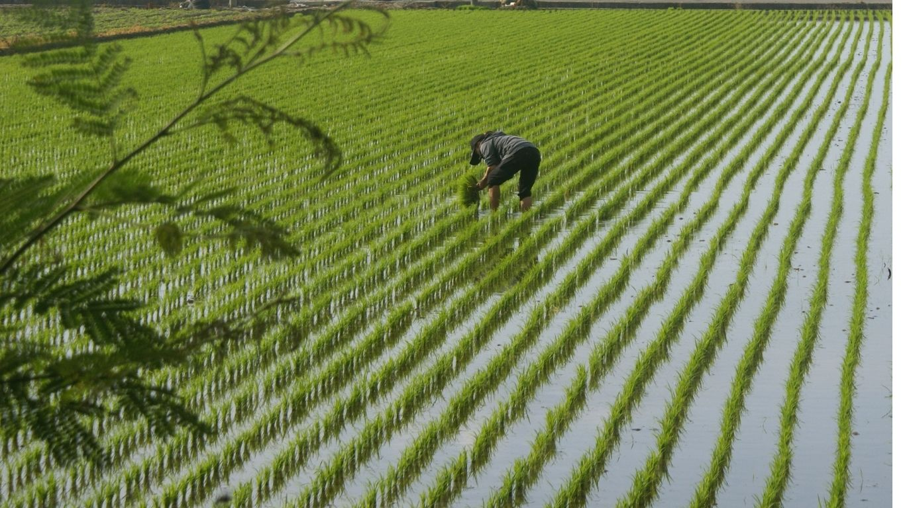
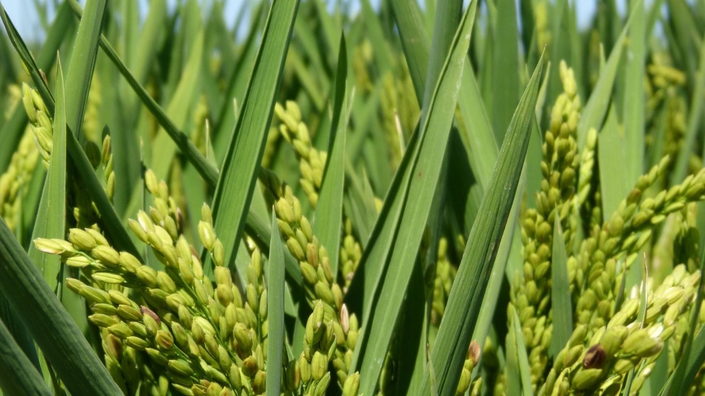
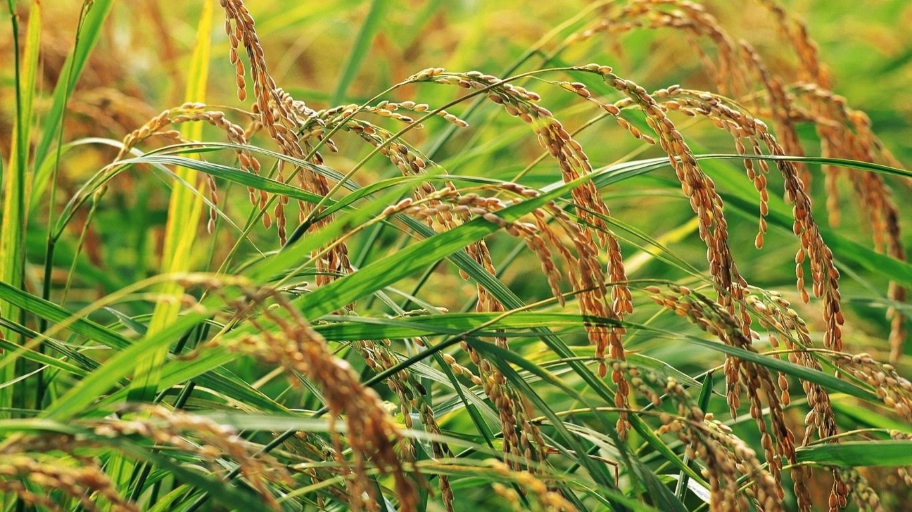
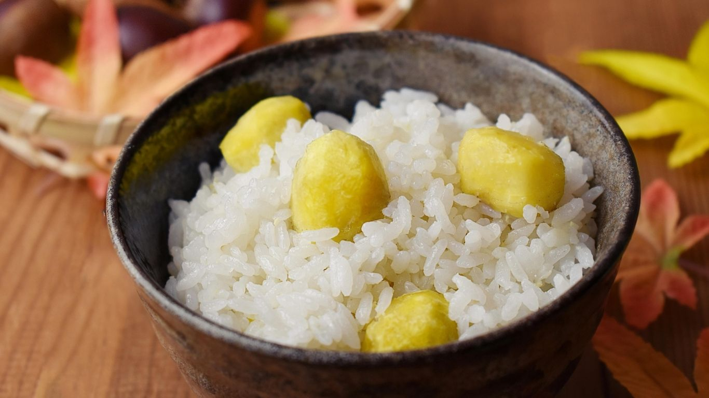
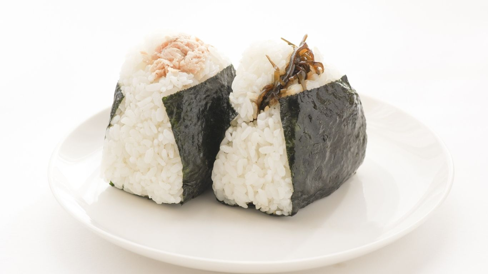

今年の田植えが今年も無事に終わりました！
恵みの雨の中、今年も元気な苗を植えることができました。これからの成長が楽しみです...
私たちの田んぼは、ため池密集地帯にあり、町面積の約12%をため池が占めています。この豊富なため池の水と、網目状に張り巡らされた「流溝（りゅうみぞ）」と呼ばれる水路網 を活用して、古くから稲作（米栽培）が盛んに行われています。また土づくりからこだわり、化学肥料を極力抑え、微生物の力を借りて稲本来の強さを引き出しています。
毎日食べるお米だからこそ、安心・安全で、炊き上がった瞬間に笑顔がこぼれるようなお米を目指して、日々愛情を注いでいます。

東京の農業高校出身で稲作のエキスパート
農業を始めたきっかけはお米が大好きで、さらに家は農家。どこよりも美味しいお米作りを目指して人生を走っていたら農業のエキスパートになっていました。
お米作りで一番嬉しい瞬間は収穫の時に金色に実った丸々と太った穂先が沢山田んぼを埋め尽くしている瞬間を見る事です。
甘みの強いこのお米を食べてみんなが美味しいと自然と笑顔が溢れる食卓を想像しながら米作りを頑張っています。
そして、今年も収穫できた事への感謝も忘れずに来年も豊作が訪れるように田んぼの手入れを欠かさない。努力の結晶が私たちのお米には詰まっています。
ぜひ稲美町1番地農園自慢のお米をお召し上がりください。
1年中日当たりも良好!
広大な土地が広がり自然豊かなそよ風が吹き込みます。


初めての方には、まずは「【特選】プレミアム高栄養米」をおすすめしております。当園の技術が詰まった、甘みとツヤのバランスが最も良い自信作です。毎日のお食事が一段と楽しみになります。
ご安心ください。当園の玄米は、環境にこだわった土づくりにより、えぐみが少なく、噛むほどに旨みが広がるのが特徴です。「今まで玄米が苦手だった」という方からも、「これなら美味しく続けられる」とご好評いただいております。
一番のメリットは「鮮度」です。お米は精米した瞬間から酸化が始まります。定期便では、発送当日に精米して一番美味しい状態でお届けします。買い忘れもなく、常に美味しいお米が食卓にある贅沢をぜひ体験してください。

稲美町のため池に囲まれた田んぼに、元気な苗を植え付けます。ここから全てが始まります。

太陽をいっぱいに浴びて、稲がぐんぐん成長します。水管理が最も重要な時期です。

黄金色に実った穂が頭を垂れます。一番の喜びを感じる瞬間です。
稲美町1番地農園が自信を持っておすすめする、安心・安全なこだわりのお米たち。収穫の喜びと愛情を込めた一粒ひと粒を、ぜひご堪能ください。
最初の水は、お米が糠（ぬか）の臭いを吸いやすい事があるので、注いだらすぐに捨ててください。ゴシゴシ研がず、優しくかき混ぜるように洗うのがコツです。
お米の芯まで水分を行き渡らせるため、夏場は30分、冬場は1時間以上水に浸してください。これでふっくら感が劇的に変わります。
炊飯が終わってもすぐに蓋を開けず、15分ほど蒸らします。その後、しゃもじで十の字に切り、底からひっくり返すように空気を含ませてほぐします。

材料: 米 2合、栗 200g、酒 大さじ1、塩 小さじ1、だし昆布 5cm

材料: ご飯 適量、昆布の佃煮 適量、塩 少々、焼き海苔 1枚
材料: ご飯 適量、ツナ缶 1/2缶、マヨネーズ 大さじ1、醤油 少々、海苔
恵みの雨の中、今年も元気な苗を植えることができました。これからの成長が楽しみです...
美味しいお米の基本はやっぱり土。私たちが毎年行っているこだわりの堆肥についてご紹介します...
商品には万全を期しておりますが、万が一配送中の破損や不良品があった場合は、商品到着後7日以内にご連絡ください。速やかに良品と交換、または返金対応をさせていただきます。
定期便には継続回数の縛りはございません。解約をご希望の場合は、次回お届け予定日の7日前までに、当サイトのお問い合わせフォームまたはメールにてご連絡ください。いつでも柔軟に休止・解約が可能ですので、安心してお申し込みください。